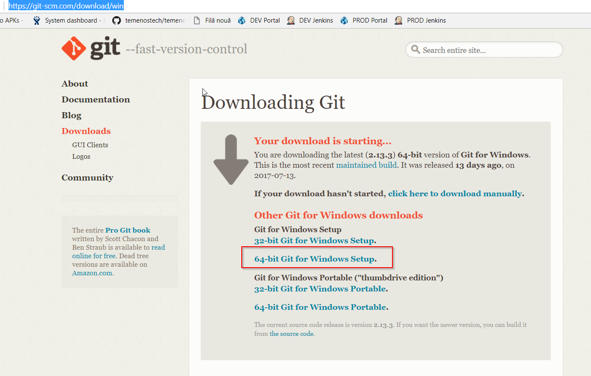
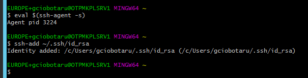
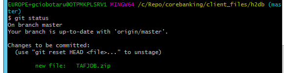

How to use GitLab Repository for MarketPlace Sandbox
Quick Start Guide
Audience
This document can be used by technical staff who need to use GitLab repository to update files on the Temenos Sandbox provisioned through MarketPlace. Each Sandbox created has an associated GitLab Repository for uploading files, plugins, add-ons to the cloud environment (called Sandbox). The platform will perform the scripts and steps needed for the files to be deployed successfully as background activities. Before proceeding you need to know the associated GitLab repository, and have users with ssh keys created in the portal.
Install GitBash CLI for Windows
You can use any GitLab/GitHub client.
Note
If you already have installed a Git client on your computer, you can skip this step.
• Download the installer from https://git-scm.com/download/win

• Run the installer and click Next on each screen, without changing anything in configurations. Click Finish once completed.
Create SSH keys (pair public and private keys)
• Open Git Bash and run:

• This creates a new ssh key, using the provided email as a label.

• When you're prompted to "Enter a file in which to save the key," press Enter. This accepts the default file location.

• At the prompt, press enter twice to create SSH keys without a passphrase:


• The screen should look like this:

• SSH keys are created and need to be added to ssh-agent. Ensure that ssh-agent is running. Run the command below:

• Add your SSH private key to the ssh-agent. If you created your key with a different name, or if you are adding an existing key that has a different name, replace id_rsa in the command with the name of your private key file. Run the command below:

• Output should be:

• Leave this Git Bash window open. Move to the next chapter to add your public key to portal. You will return to this window to clone the repository.
Add users in portal with SSH key
• Login to your organisation portal using the link and the credentials provided.

• Click User menu and then New user button, as below:

This will create a new user in your organisation. This new user will be automatically assigned to all GitLab Repositories from within all environments. If you have already a user created, you can click on the user and update the SSH key box with the one created above.

• Public SSH key needs to be pasted in SSH Key text box. Open Windows Explorer and locate the public key generated above. Navigate to c:\users<yourusername>.ssh and locate the .pub file (id_rsa.pub).

• Right click and open it with notepad. Select all and copy to clipboard.

• Paste the copied text into the SSH Key text box and click Create user button.

Your username will be created in Gitlab server and public SSH key provided will be added to your account being accessible from all the environments created in your organisation.
For further details or issues related to Gitlab SSH keys usage, or other operating systems (MAC, Linux), please consult this link: https://help.github.com/articles/generating-a-new-ssh-key-and-adding-it-to-the-ssh-agent/
Clone the Repository to your local computer
Before proceeding, please login to your organisation, find your environment then locate the Repository Application and Endpoint. Right click the endpoint and copy the link address or click the copy to clipboard icon from the right:

• Create a folder where do you want to store the repository files. Let’s call it “repo”.
• Go to Git Bash window. Change directory to the new created folder (“repo”). Type “cd /c/repo”, as below:

• Clone the Sandbox repository using the “git clone
The steps below will describe the way we can use the Git client to push files to the repository. This will be done using an example, but the same process can be applied to any file what we want to push in any folder from the Repository. This example will show how to import a local database file to the Sandbox (Cloud Environment). For the H2 database to be imported correctly in the Cloud Environment, there are some conventions that need to be applied: 

Push files to Sandbox


Repository folder structure and description
Folder Name
Description
addons
This folder is designated for AppDynamics. Upload files as ZIP.
client_files\h2db
Local H2 database that will be uploaded to the cloud Sandbox. Database username must be t24 and password t24 (case sensitive). Database name is mandatory to be “TAFJDB.h2.db” (case sensitive) and must be archived as a ZIP with name TAFJDB.zip (case sensitive). If the above conditions are not satisfied, the database will not be uploaded to the cloud Sandbox. This procedure will replace the existing database in the cloud with this one. The old database will be lost, including any records loaded manually.
client_files\localjars
Upload here any local jars (not released by T24 Core). There can be any simple Jars used by T24 or other parties. All files will be copied to the module folder inside Jboss and the module.xml file will be updated automatically every time a new commit is triggered in this folder. If a Jar file is corrupted or there are missing dependencies, Jboss will fail to start and the Sandbox can’t be used. Fixing the issue, will trigger a new rebuild and Jboss restart.
packages
One or more T24 DS (Design Studio) packages can be uploaded into this folder. All packages will be deployed automatically inside T24.
plugins
WAR files can be uploaded in this folder. The files will be deployed inside Jboss EAP.
updates
The updates files downloaded from the portal in zip format. The files will be copied to the update folder and the T24 Update procedure is triggered.
wsdl
WSDL files and folders that are required by plug-ins (war file) need to be uploaded here.